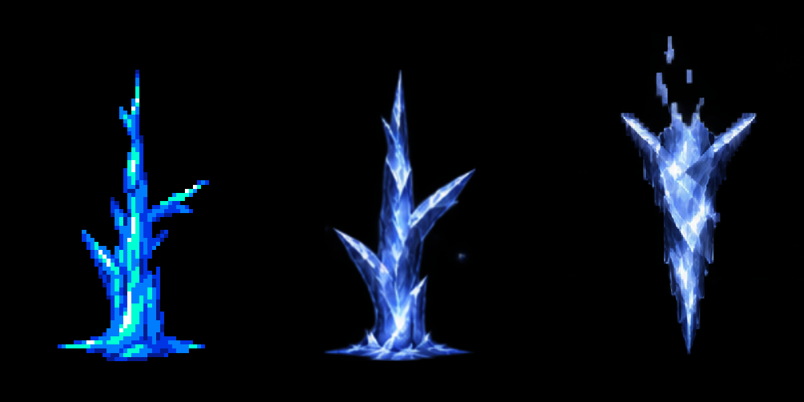

AirBoss 얼음기둥 · 24장 리디자인
원본의 기준 시점 14개 + 새 중간 그림 10장 · 약 0.77초 유지 · 프레임별 피봇과 월드 크기 보존
기존 Attack_IcePillar새 24장 IcePillar승인된 고드름 질감

같은 시각의 원본과 새 클립을 Unity에서 나란히 렌더했습니다. 양쪽은 같은 Scale과 Visual Y=-0.16을 적용했습니다.
24장은 서로 다른 그림의 수입니다. 원본 타이밍을 보존하기 위해 일정한 24FPS 대신 원본 키 사이에 중간 그림을 배치했습니다. 기존 Sample Rate 100, 약 0.77초 길이, Loop Time 설정을 유지했습니다. 이 페이지는 비교 편의를 위해 회차 사이 0.6초를 쉬며, Unity 클립 자체에는 이 대기 시간이 없습니다.
멀티 스프라이트제작 사양제작 프롬프트